The Story Behind This
There was a large collection of family photographs. I took pictures of a handful that caught my eye.
Studio names on the backs of cards, handwriting on the reverses, and newspaper clippings each gave up a little more. The names and dates have since been checked against the civil registration indexes, the census, parish registers, and the probate calendar. One record led to the next.
What the records support is a family in Victorian and Edwardian London, Birmingham, Cornwall, Bedfordshire and Hertfordshire. Reg's mother was Edith Madeline Spencer. His father, Edward Dixon FitzMaurice, was a civil engineer, born at Ward End, Aston, on 21 October 1872. Ron's parents, Henry George Andrews and Rosina Maud Cousins, were killed at their home in Plaistow on 19 April 1941. The newspaper cuttings about the Earls of Orkney are in the collection. The London Gazette of 23 April 1890 rules out a descent from that family. A published account that places John FitzMaurice in a Carlow branch is likely but not proved.
This is what the records support so far. The branches, the tree, the crest, the wartime album and the wedding each have a page below. Sources, and how a claim is worded, are listed separately.
Probable claims are worded with probably, about or likely. Anyone who may still be living is named with a first name and a relationship only.
The Research
Some of the research is broken down into different pages. The family tree maps the connections as far back as we can trace them. The coat of arms page explains the heraldry. Grandpa's wartime story is told through his own photo album. And the wedding album is preserved in full.
Clues from the Collection
These are the original photographs from the family collection, the images that started the research. Studio names on the backs of cards, handwriting on the reverses, and newspaper clippings each gave up a little more.

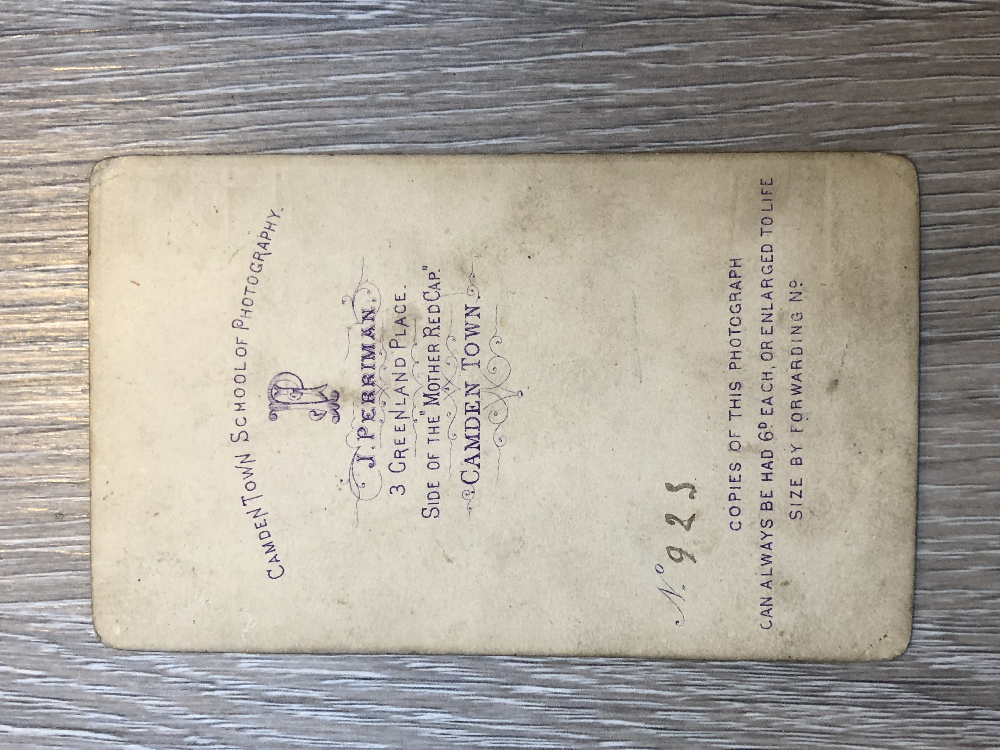

Camden Town, c. 1865
The earliest photograph in the collection was taken at J. Perriman's studio near the Mother Red Cap pub in Camden Town. Neither sitter is named. The card does not show where the family came from. Edward Dixon's parents married at Battersea, and their children were born in Birmingham. The reverse reads: 'Camden Town School of Photography, Commission No. 925.'


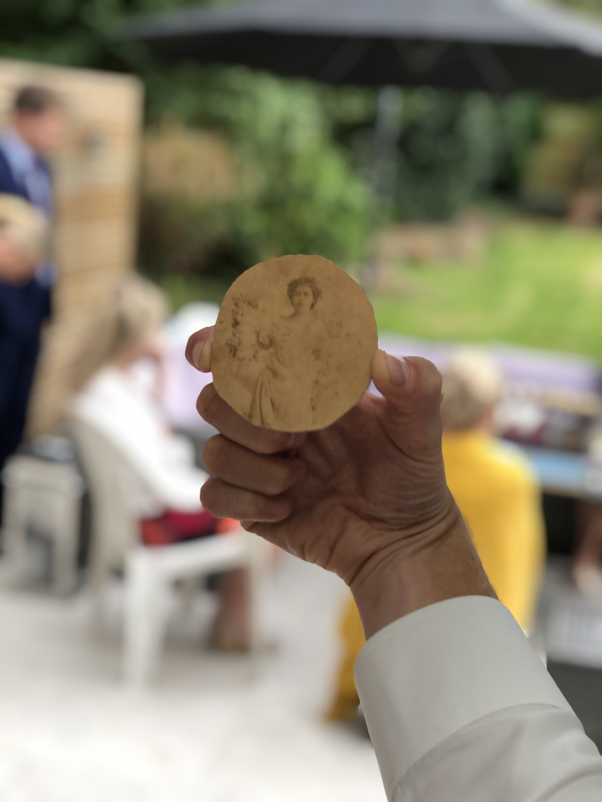
Edith Madeleine FitzMaurice, c. 1899
A circular medallion portrait inscribed on the reverse 'Edith Madeleine Fitzmaurice c.1899.' She was Reg's mother, Edith Madeline Spencer, not his sister. She was probably born about 1866 to 1869 in Islington, married Edward Dixon FitzMaurice at St Matthew's, Brixton, on 2 August 1897, and probably died in the Bridge district of Kent in early 1929, aged 61. Her age is not the same in every record. Her children.


Edward Dixon in Knightsbridge

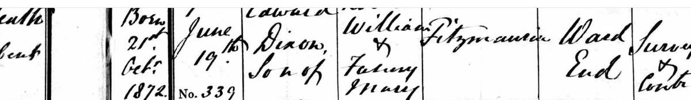
Edward Dixon FitzMaurice was born on 21 October 1872 and baptised on 19 June 1873 at St Margaret's, Ward End, Aston. The register names both parents, William and Fanny Mary Fitzmaurice. The Stuart studio portrait is probably Edward Dixon, by his likeness to the labelled beach photo. Edward was an engineer all his working life: an apprentice civil engineer in 1891, a civil engineer in 1901 and 1911, and an engineer on every passenger list from 1916 to 1923. The white collar in the beach photo is not a sign that he was a clergyman. On 2 August 1897, a professional singer aged 25, he married Edith Madeline Spencer at St Matthew's, Brixton. He died on 7 June 1928, probably aged 55, and was buried at Chingford Mount Cemetery. His engineering career and the South Africa years are on the Falcke page. His father was Robert William FitzMaurice and his mother was Fanny Mary Falcke.

Probably Edith, Brixton
The same young woman, in the same jewelled headband, pearl necklace and flowered costume, appears on the medallion inscribed Edith Madeleine Fitzmaurice c.1899. The Lang Sims studio was on Brixton Road, close to St Matthew's, Brixton, where Edith married Edward Dixon in 1897. The costume looks theatrical. Edward gave his occupation as professional singer at the wedding.

A young man in a bow tie
This portrait has no name on it. It is not identified as Reg. Reg himself was Baron Reginald FitzMaurice. Baron is a forename, not a title. He was probably born on 26 May 1904 in the Wandsworth district, probably married Lilian Maud Mary Bennett in late 1927, and died on 31 March 1977. The probate calendar places him at Hayes.
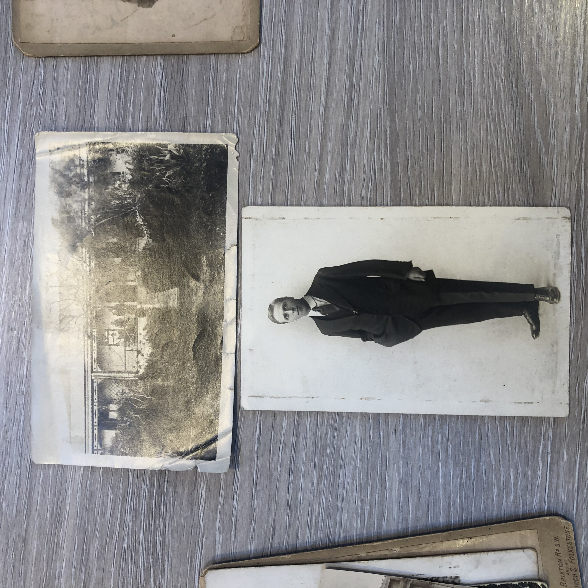
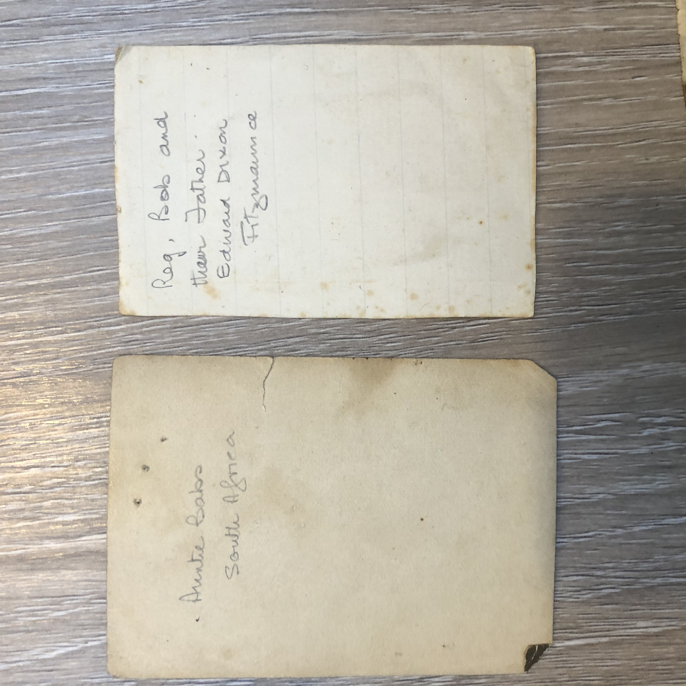
Reg, Bob and their father
The reverses of two photographs confirm key family identities. One reads 'Reg, Bob and their Father Edward Dixon Fitzmaurice.' The other reads 'Auntie Babs, South Africa.' The 1911 census bears out what the label says: Reg and Bob were Edward Dixon's sons. The beach snapshot was probably taken about 1908 to 1910 on the Kent coast, when the family lived near Whitstable. Bob would have been about 7 and Reg about 4. Reg made a short trip to Canada early in 1925: see Reg's page.
Two unlabelled snapshots, a house with a verandah and a young man in a dark suit, may date from the family's South African years, about 1916 to 1925, but nothing on them says so.
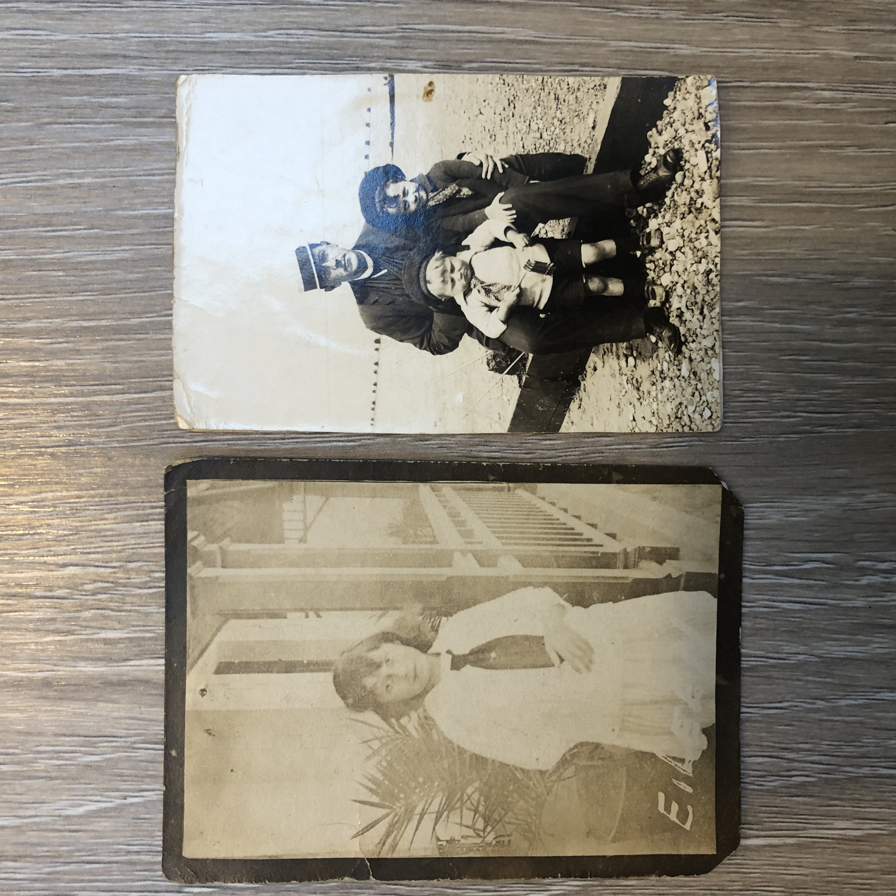
Auntie Babs, the girl in South Africa
A snapshot of a girl on a verandah is labelled on the back in pencil: Auntie Babs, South Africa. The letters Eil are scratched into the front. The family confirms she was Eileen Sybil FitzMaurice, Reg's younger sister, born in Kent in late 1907. In March 1916 her father, Edward Dixon, an engineer, sailed for South Africa to make a new life there, and that August a Mrs FitzMaurice of 43 followed with two boys of 15 and 12 and a girl of 8, the ages of Edith, Bob, Reg and Eileen. When Eileen married Leslie Hugh Simmons at Staines in the summer of 1936, the local paper called her the daughter of the late Mr Edward Dixon Fitzmaurice, formerly of Cape Town. Fourteen years later Auntie Babs and Uncle Leslie stood side by side on the steps at Pat and Ron's wedding. Babs lived with Reg and Lilian in the early 1930s: see Eileen's entry.
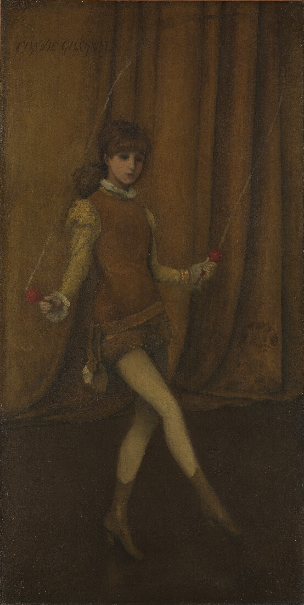
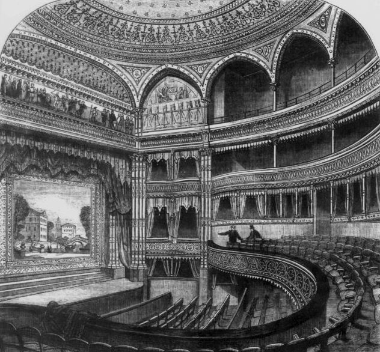
The Gaiety Theatre Connection
Connie Gilchrist, wife of the 7th Earl of Orkney, was a star of the Gaiety Theatre , Victorian London's most celebrated venue. Her marriage into the FitzMaurice peerage was a society sensation of its era. She was painted by Whistler, and her portrait hangs in the Metropolitan Museum of Art.
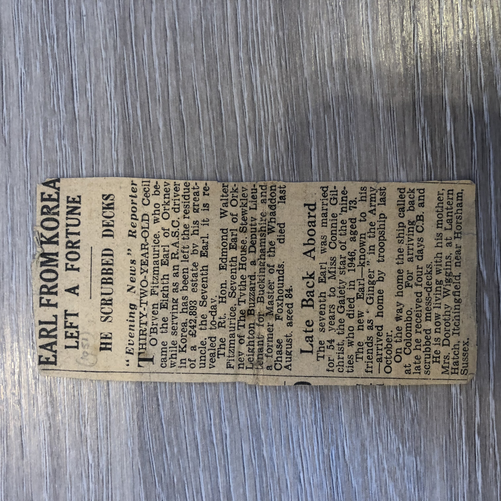

The Korean War Earl
Among Pat's papers were two Evening News cuttings about Cecil FitzMaurice, who became the 8th Earl of Orkney in 1951 while serving as an Army driver in Korea, and who married at Brixham in 1953. Pat kept them, so the family followed his story and believed there was a connection. The records do not show that we descend from the Earls of Orkney. Our FitzMaurice line goes back to John FitzMaurice, a clerk in the Board of Ordnance at the Tower of London, who married Eliza Taylor at Birmingham in 1827. A published family history places John in a Carlow branch of the FitzMaurices of Kerry. If that is right, the Earls were very distant cousins, not ancestors. That link is likely but not yet proved.
The Andrews Family, c. 1930s
The photograph has no label, so the names come from family memory, and the caption names the father twice. The records name the parents as Henry George Andrews and Rosina Maud Cousins, and the younger son as Sidney George. All three were killed at their home in Plaistow on 19 April 1941. The album's East Ham is the next borough. Herbert William, the elder brother, was born in 1916. The Andrews line and the Cousins line.
Update, November 2026: The photograph has no label, so these names come from family memory. The caption names the father twice, once in each row; only one of those can be right.

The Photo Collection Spread
The wider collection of photographs and cabinet cards laid out together. Additional postcards, unidentified portraits, and snapshots from across the family's history , many still waiting to be identified.
Key Discoveries
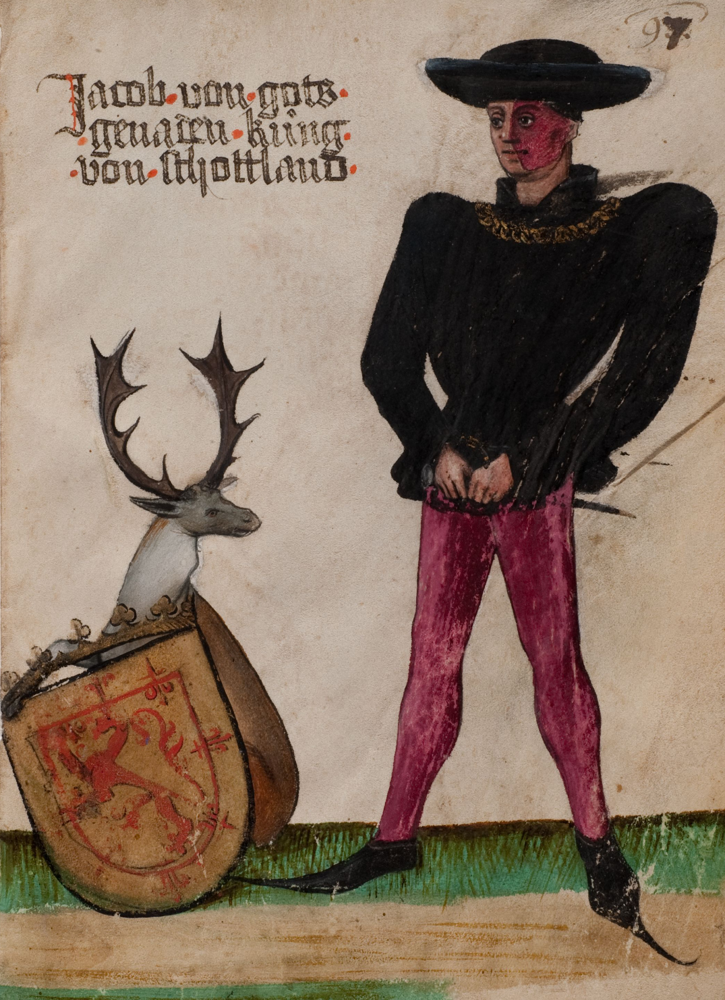
King James II of Scotland
King James II of Scotland is an ancestor of the Earls of Orkney, not of this family. The London Gazette of 23 April 1890 names the 7th Earl's surviving brother and sister as Alexander Edmond and Isabella Emily only. Edward Dixon FitzMaurice, born at Aston in 1872, is not among them. The family tree keeps the Orkney line in its own frame, with no line drawn to the family. The arms are the earls' arms.

The Prime Minister Who Ended the American Revolution
William Petty FitzMaurice, Earl of Shelburne, was Prime Minister from 1782 to 1783 and negotiated the Treaty of Paris. He shares the FitzMaurice surname. No genealogical link to this family has been found, and the old claim of one Anglo-Norman dynasty is not a proven kinship.
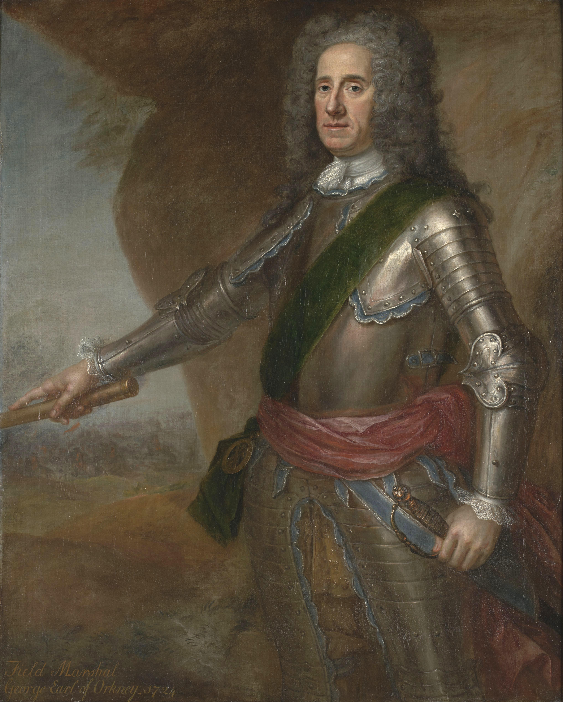
George Hamilton, 1st Earl of Orkney , Britain's First Field Marshal
George Hamilton was created Earl of Orkney in 1696. He is part of the history of that title. He is not a proven ancestor of this family.
Connie Gilchrist , The Gaiety Girl Who Became a Countess
Constance Gilchrist married Edmond, 7th Earl of Orkney. She is not a proven relative of this family. Much of the published detail about her life is secondary, and it is not repeated here as fact.
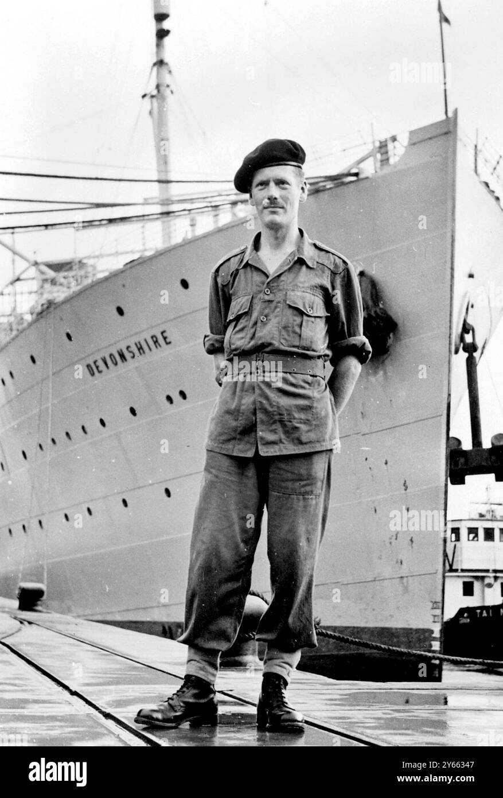
Cecil O'Bryen FitzMaurice , The Last Earl
The Evening News cutting says Cecil became Earl while he was still in Korea, in August 1951, and that on the voyage home he was set to scrub the mess decks because he returned late to the ship at Colombo. It says he was left the residue of a 42,893 pound estate. He was not an ancestor of this family. A descent would need Edward Dixon to be a son of Henry Warrender FitzMaurice, which the 1890 Gazette rules out. If the Carlow account of John is right, the Earls were very distant cousins, and that link is likely but not proved. A date of 29 September 1951 beside HMT Devonshire is not on the photograph itself, and it does not agree with the cutting.